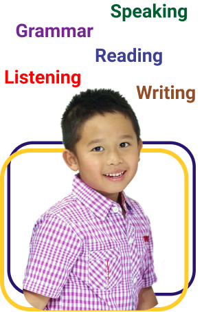
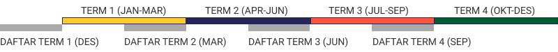
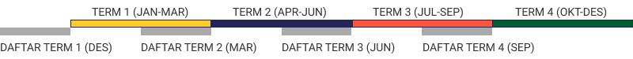

Our Programs

General Descriptions
Children’s English (CE) adalah program bahasa Inggris umum (General English) khususnya untuk siswa TK, SD, & SMP. Program ini bertujuan untuk menumbuhkan minat mereka dalam belajar bahasa Inggris serta mengembangkan
kemampuan mereka dalam Listening, Speaking, Reading, Writing, & Grammar.
Dengan kurikulum yang komprehensif, siswa nantinya diharapkan tidak hanya bisa mengatasi pelajaran bahasa Inggris mereka di sekolah, tetapi juga bisa berbicara dan menulis dengan benar, sehingga mereka bisa mengembangkan
kehidupan pribadi dan sosial mereka dengan baik.

Types of Children English (CE)
Bahasa Inggris untuk anak-anak (CE) ini terdiri dari 4 program, yaitu:
General English (GE) adalah program bahasa Inggris yang paling populer untuk siswa mulai usia TK – SMA. Karena diselenggarakan secara rutin 4 kali (term) setahun, maka program GE ini juga disebut Regular Program. Untuk
ikut program yang banyak levelnya ini, calon murid harus ikut Placement Test online atau offline terlebih dahulu agar bisa masuk di kelas yang sesuai dengan kemampuan mereka.
Term atau periode kelas GE adalah sebagai berikut:
Term 1 : January – March (pendaftaran dimulai bulan Desember)
Term 2 : April – June (pendaftaran dimulai bulan Maret)
Term 3 : July – September (pendaftaran dimulai bulan Juni)
Term 4 : October – December (pendaftaran dimulai bulan September)

Term atau periode kelas GE adalah sebagai berikut:
Term 1 : January – March (pendaftaran dimulai bulan Desember)
Term 2 : April – June (pendaftaran dimulai bulan Maret)
Term 3 : July – September (pendaftaran dimulai bulan Juni)
Term 4 : October – December (pendaftaran dimulai bulan September)

CTC adalah program untuk siswa SD (kelas 4, 5, 6) dan SMP yang ditujukan untuk menumbuh-kembangkan keberanian (confidence) siswa dalam speaking. Di kelas ini, guru menekankan Fluency building dengan memberi banyak
kesempatan pada siswa untuk Listening (language input) & Speaking (language output).
CEF adalah Holiday English Program untuk siswa TK (A & B), SD (kelas 1, 2, 3), dan SD (4, 5, 6) yang diselenggarakan 3 x seminggu @ 1.5 jam selama 2 minggu (6 kali pertemuan) selama liburan sekolah, biasanya di bulan Juni.
Selain untuk memberi siswa kegiatan yang bermanfaat selama liburan panjang, program ini juga bertujuan untuk menjaga tingkat kemampuan bahasa Inggris siswa yang telah dicapai selama ini. Karena tujuan program ini untuk
penyegaran, siswa di kelas akan banyak melakukan kegiatan berkomunikasi, khususnya listening & speaking, yang menarik dalam bahasa Inggris sambil bermain.
Independent Learning Unit (ILU) adalah program bahasa Inggris bagi murid TK, SD, SMP, dan SMA yang ingin mempercepat dan memantapkan penguasaan bahasa Inggris mereka dalam aspek tertentu: Grammar, Vocabulary, Spelling,
Pronunciation, Listening, Reading, Speaking, atau Writing. Di dalam program yang terdiri dari 5 tahapan ini (Introduction, Growth, Development, Consolidation, & Independence), seorang coach membimbing sekelompok kecil
siswa (semi-private) untuk mengerti dan mampu mengerjakan materi khusus dari SPELL. (module-based) agar mereka menjadi pembelajar mandiri (independent learner). Karena sifatnya yang menekankan kemandirian ini, maka siswa
yang termotivasi bisa menyelesaikan program ILU kami dengan lebih cepat.